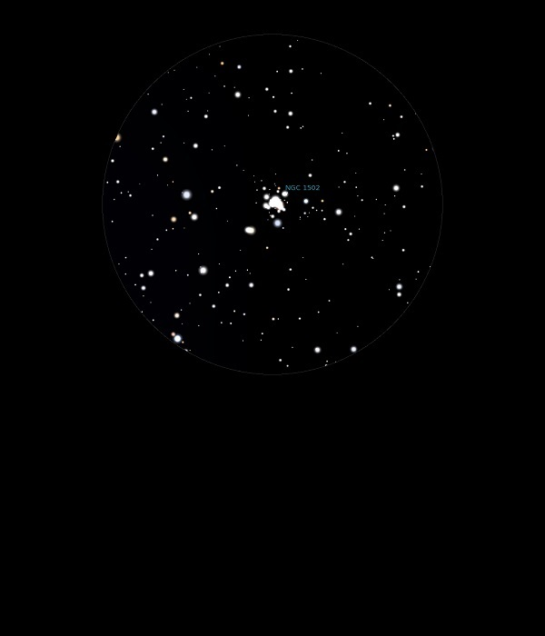

NGC 1502
Open Cluster in Camelopardalis
NGC 1502
Mag 6.9
03/10/14
A small but very neat Open Cluster, easily located
Four pairs of stars, in a line, run across the few faint stars
in the Cluster
The brightest two, at Mag 6.9, are (possibly) the double star
SZ Sam, HIP 19270, very white and sharp in 12mm
A really nice cluster